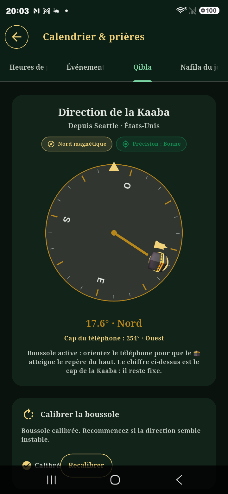
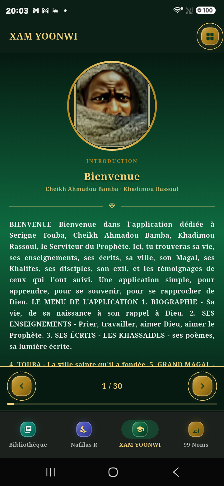

Bibliothèque et fiche du livre
Les khassaïdes du catalogue sont consultables dans l’application. Une fiche claire présente le titre, la langue et les fichiers disponibles avant l’ouverture.
- Recherche par nom, avec saisie vocale quand le téléphone le permet.
- Filtres par favoris, téléchargements et langue.
- Lecture intégrée des PDF, sans navigateur ni adresse à recopier.


Heures de prière et widget
Les horaires sont calculés hors ligne pour la ville choisie manuellement, sans GPS. Le compte à rebours suit l’heure du téléphone.
- Cinq prières visibles dans l’application et sur l’écran d’accueil.
- Widget Android sobre : ville, prochaine prière et marqueur doré.
- Appel à la prière personnel, désactivé tant qu’il n’est pas activé volontairement.

Événements et compte à rebours
Grand Magal, Ramadan et autres repères mourides sont affichés sans connexion. Le réglage « Sénégal / Touba (+1 jour) » ne décale que les événements religieux.
Le compte à rebours reste basé sur l’heure du téléphone : aucun serveur n’est interrogé.

Qibla sans GPS
La direction est calculée depuis la ville choisie manuellement. Quand le capteur le permet, la boussole est vivante ; sinon, un repère statique prend le relais.
- Badge « Nord magnétique » pour éviter toute confusion avec le nord géographique.
- Pastille de précision : Bonne, Moyenne, Faible ou Indisponible.
- Aucune position GPS n’est demandée ni enregistrée.

Nafilas du Ramadan
Les nuits sont présentées en texte seul, avec les invocations, leur nombre de répétitions et les bienfaits, dans la même sobriété que le reste de l’application : police Amiri et filets dorés.

Nafila du jour
Les fiches de la semaine se feuillètent en français, wolof et anglais. L’écran s’ouvre sur le jour du téléphone, avec un badge « Aujourd’hui ».
Aucune image, aucun lien vidéo : uniquement le texte, lisible hors ligne.

99 Noms d’Allah
Chaque Nom est affiché en arabe, en transcription latine et en français. La lecture reste disponible même sans réseau.

XAM YOONWI
Trente chapitres en texte pour connaître la vie de Serigne Touba, ses enseignements, ses écrits, Touba, le Grand Magal, les Khalifes, la famille et les disciples.
- Chaque chapitre porte un portrait recadré depuis la planche source.
- Texte émeraude et or, lisible sans connexion.
- Les planches complètes ne sont pas intégrées à l’APK.

Mes PDF téléchargés
Les fichiers enregistrés restent accessibles dans l’application. Le lecteur intégré conserve les proportions des pages pour une lecture confortable.
Aucun historique n’est envoyé : tout reste sur l’appareil.

Tous les accès
Le bouton flottant 3D ouvre un menu unique qui mène directement à la bonne fenêtre, sans modifier les barres du haut et du bas.
Le libellé de la deuxième rubrique du bas est « Nafilas R ».
À propos et partage
L’application est réalisée par Mouhamadou Falilou Seye. Elle est gratuite, sans publicité et sans analytique.
Une seule idée : servir, sans bruit
Pas de publicité, pas de suivi, pas de GPS imposé, pas de paiement dans l’application. Les traductions et transcriptions restent la propriété de leurs auteurs respectifs ; retrait sur simple demande.
Parcourir la bibliothèque · Lire les nafilas · Politique de confidentialité
Captures prises directement dans l’application, au format 720 × 1560. Cliquez sur une image pour l’ouvrir en grand.